Mayoritariamente ganadera.
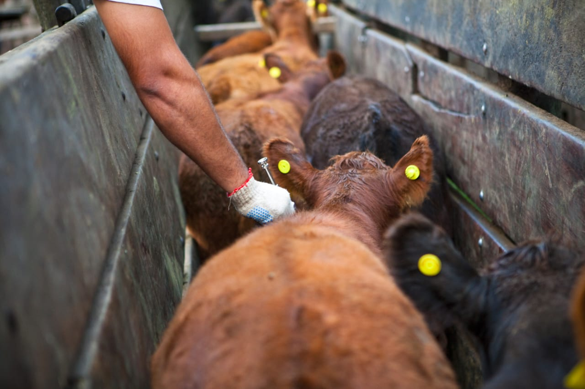
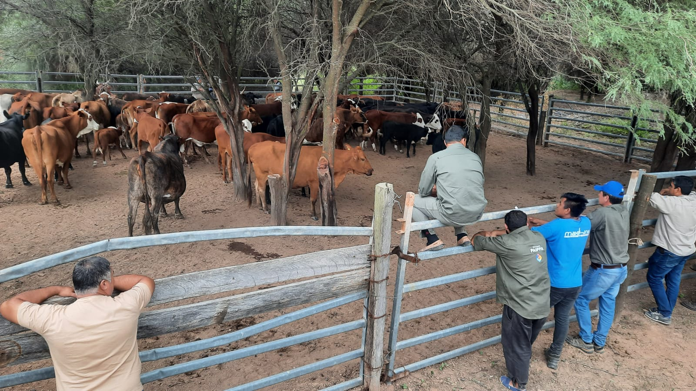
Aprovechamiento forestal.
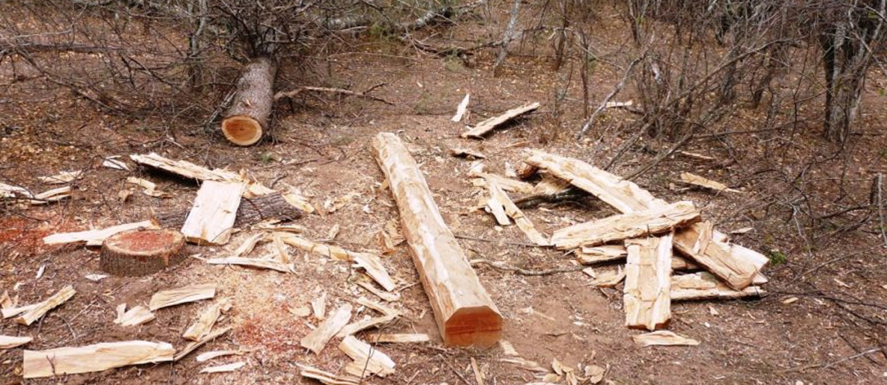
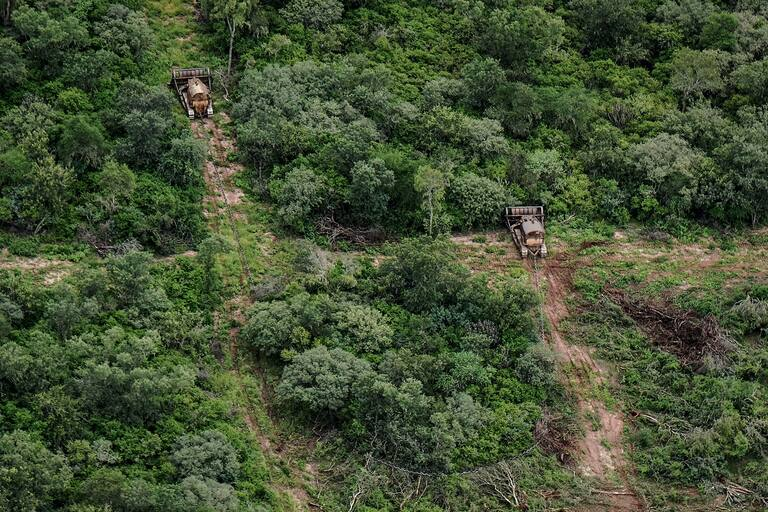
Agricultura de arroz, maíz, oleaginosas y hortícola.
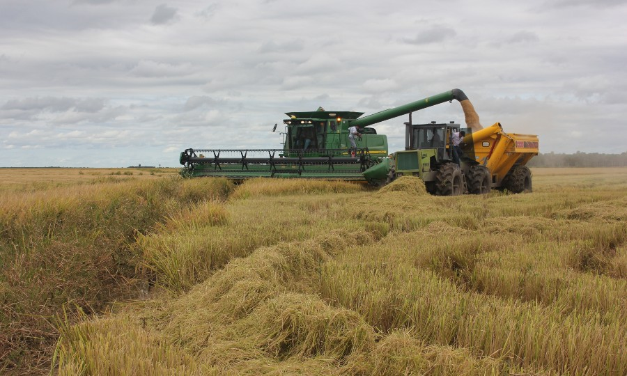
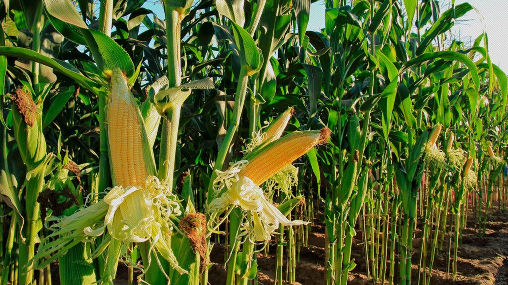
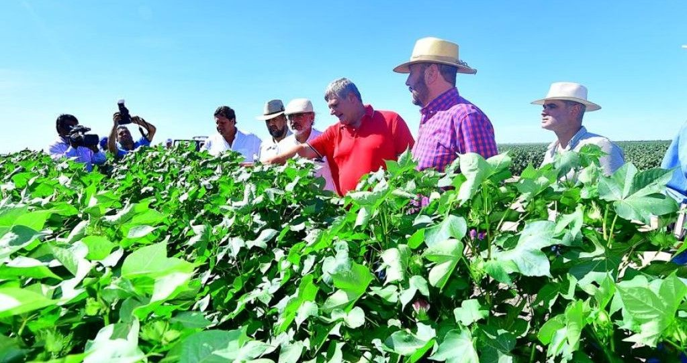
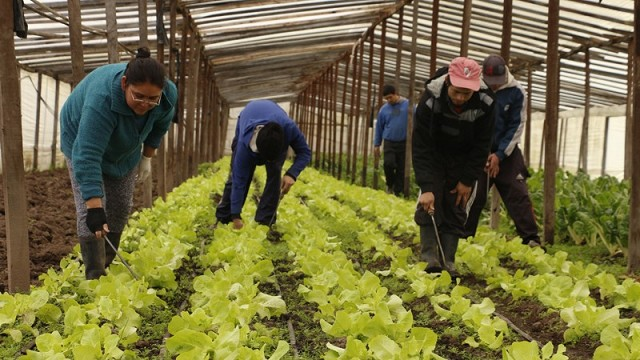
Asiento de áreas turísticas.
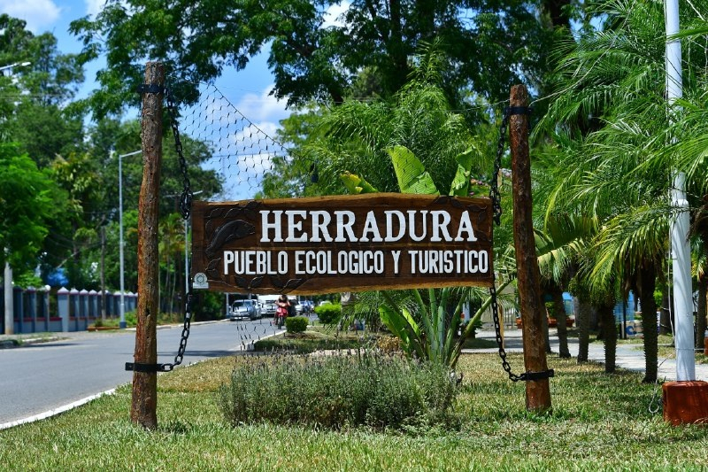
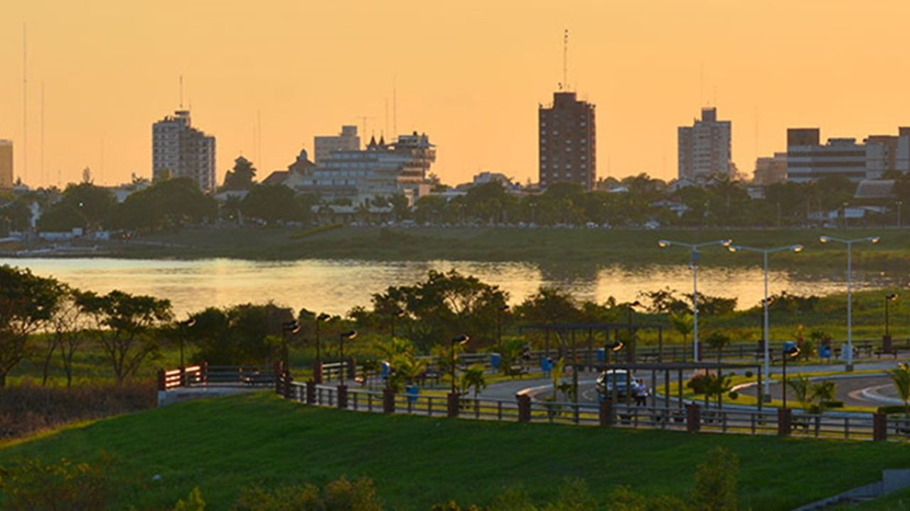
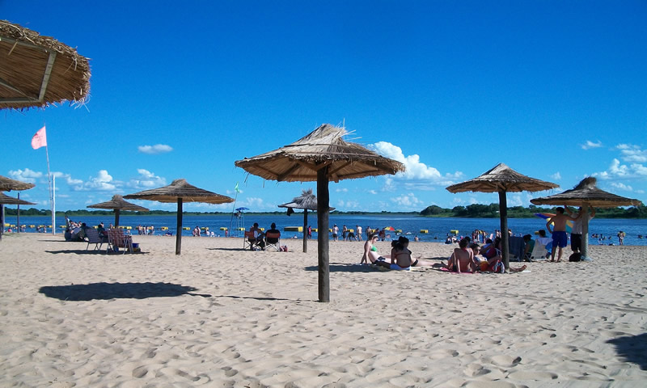
Industrías lácteas, cuero, muebles, textil, tanino, metalmecánica y farmacéutica.
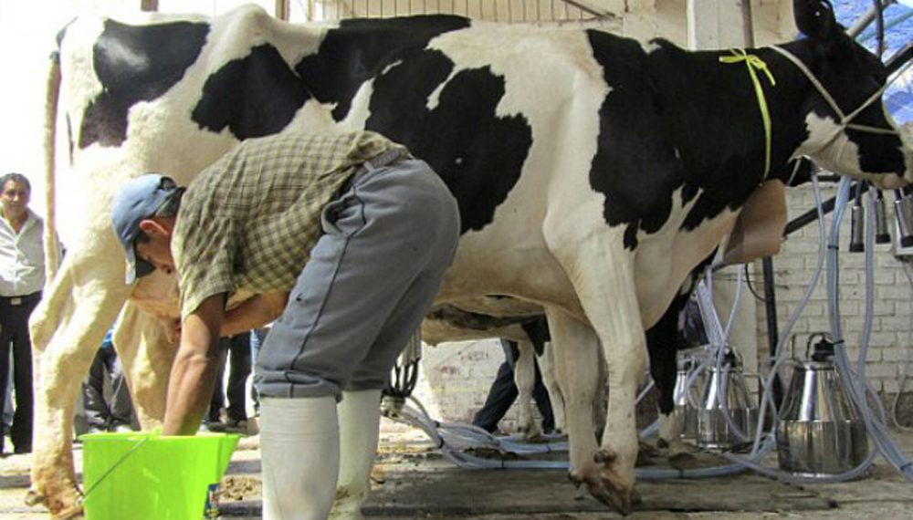
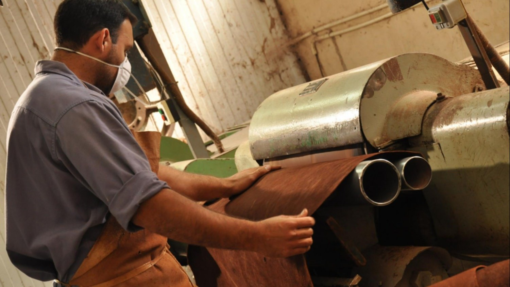
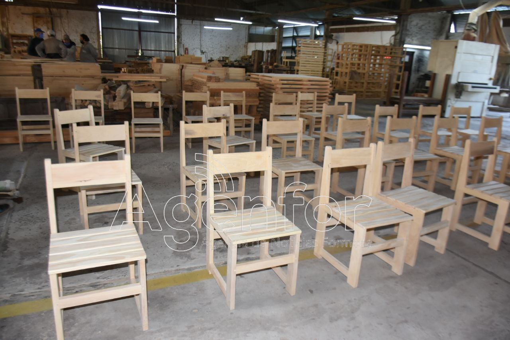
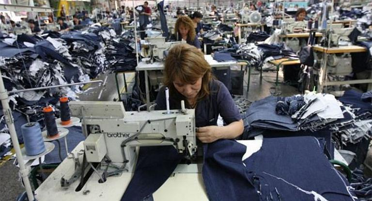
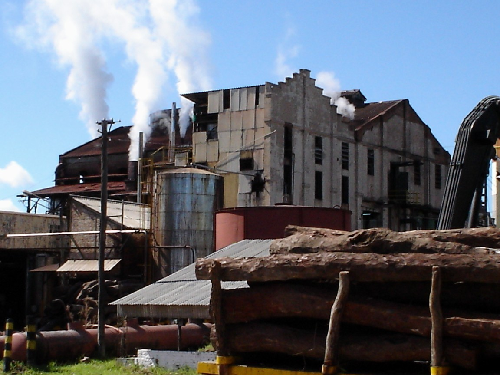
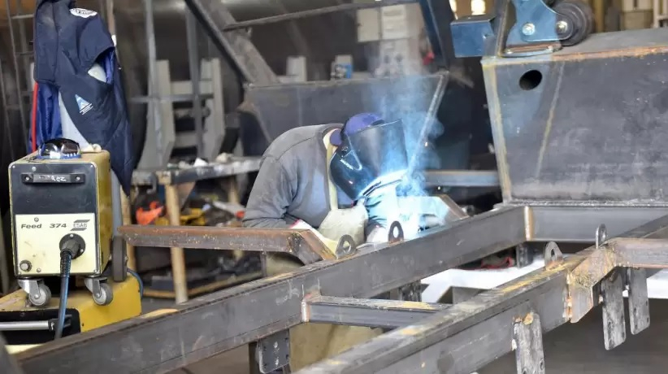
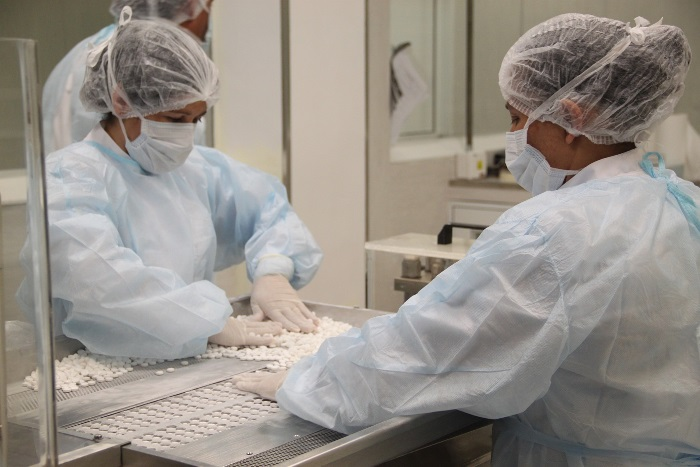
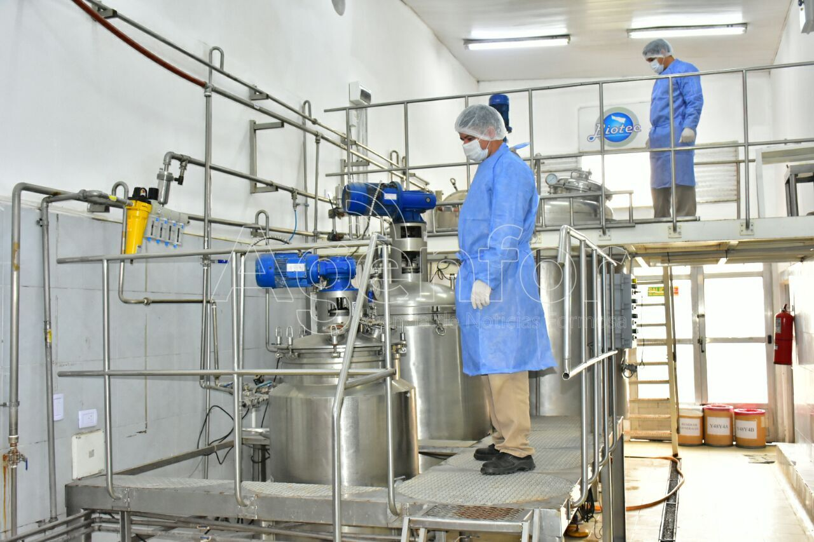